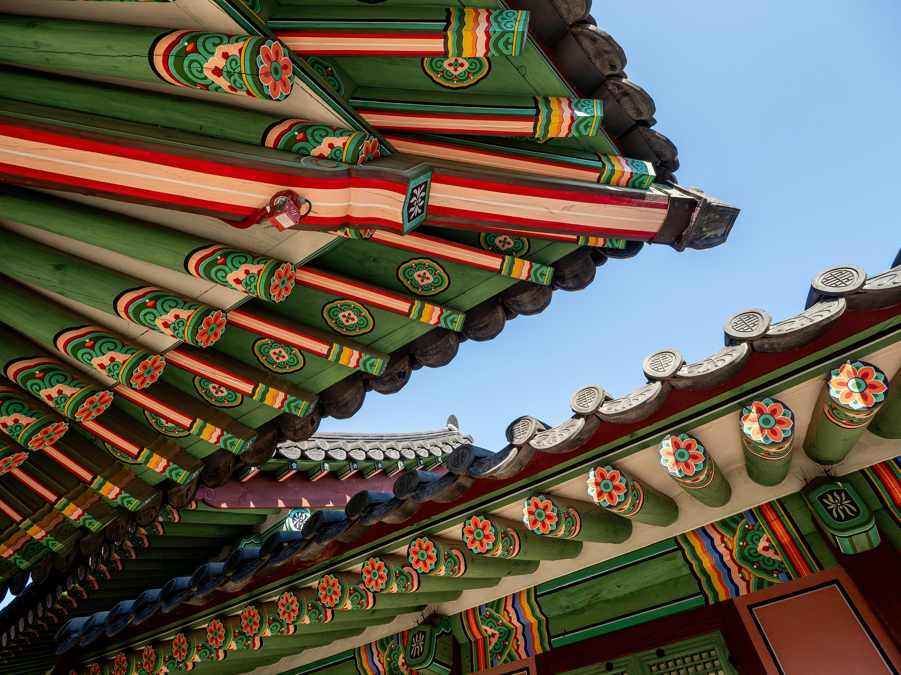

¿Qué es el Dancheong?
El Dancheong es el sistema decorativo tradicional coreano aplicado sobre la madera de templos, palacios y estructuras ceremoniales. Utiliza cinco colores primarios azul, rojo, amarillo, blanco y negro basados en la filosofía del Obangsaek y el pensamiento cosmológico del Asia Oriental.
Más allá de la estética, el Dancheong cumple funciones prácticas: protege la madera de la humedad, los insectos y el deterioro, al tiempo que comunica el rango y la importancia de cada edificio.
Los Cinco Colores Tradicionales
Cada color del Dancheong representa un punto cardinal, un elemento natural y un valor filosófico.
Azul
Rojo
Amarillo
Blanco
Negro
Simbolismo de cada color
- Azul (Cheong): Representa el Este, el dragón azul, la primavera y el crecimiento. Simboliza vida, esperanza y vitalidad.
- Rojo (Jeok): Representa el Sur, el fénix rojo y el verano. Es el color de la protección contra los malos espíritus y la energía positiva.
- Amarillo (Hwang): Representa el Centro y la tierra. Simboliza el equilibrio del universo y está reservado para edificios imperiales.
- Blanco (Baek): Representa el Oeste, el tigre blanco y el otoño. Simboliza pureza espiritual, claridad y nobleza.
- Negro (Heuk): Representa el Norte, la tortuga negra y el invierno. Simboliza profundidad, sabiduría y el agua que todo lo sustenta.
Técnica y Aplicación
Proceso de aplicación
- Preparación de la superficie con capas de base
- Trazado de patrones geométricos y naturales
- Aplicación de pigmentos naturales en capas sucesivas
- Motivos de nubes, flores de loto, dragones y fénix
- Acabado con barniz protector natural
Función doble
El Dancheong no es solo decoración: los pigmentos minerales y vegetales forman una capa protectora que repele insectos, sella la madera contra la humedad y retrasa la combustión. Un edificio con Dancheong bien conservado puede durar varios siglos más que uno sin tratamiento.
